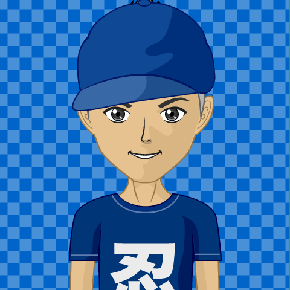

|  |
Hello guys! If you have landed on this page, you are really eager in learning more about me or you are a creep that is trying to stalk me. If you are a creep, I advise that you click off immediately. If you are a curious person, feel free to navigate through my webpage using the above navigation bar. If you want a basic intro of my life, keep reading below. |
I'm a Grade 10 student born in Jaffna, Sri Lanka on August 17, 2008. I came to Toronto when I was around 8 months old and have remained in Toronto since. I have a mom, a dad, a sister, a brother and seven pet guppies in my family. I am really lucky to have a wonderful and loving family. I obviously won't keep rambling on and on about myself. Go on and explore more about me through this wonderful website I have put together.